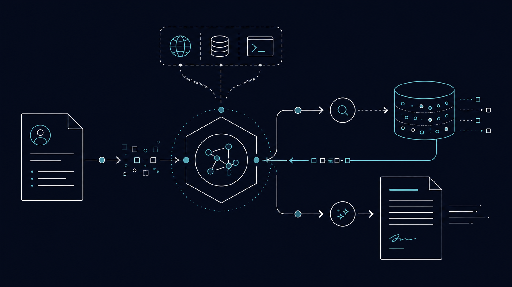
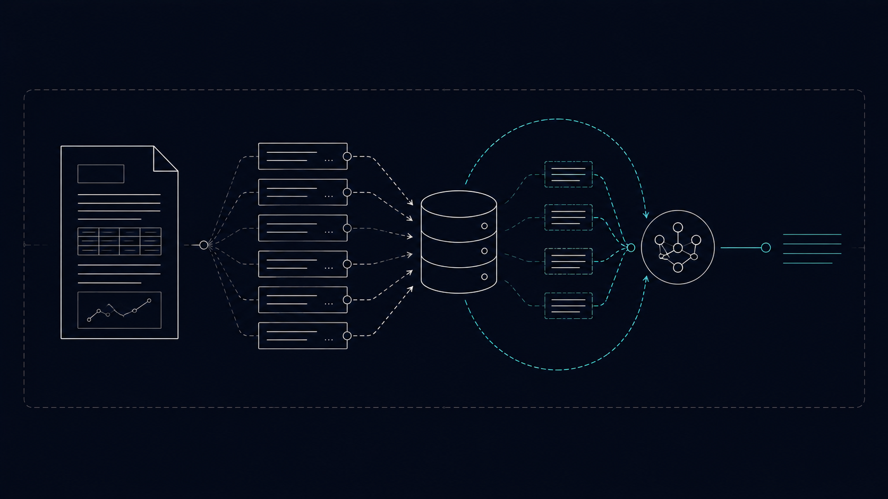
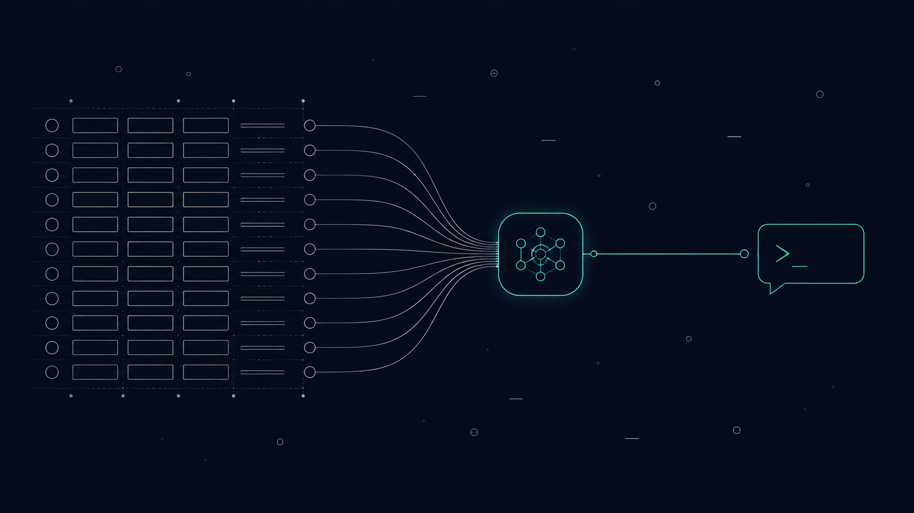
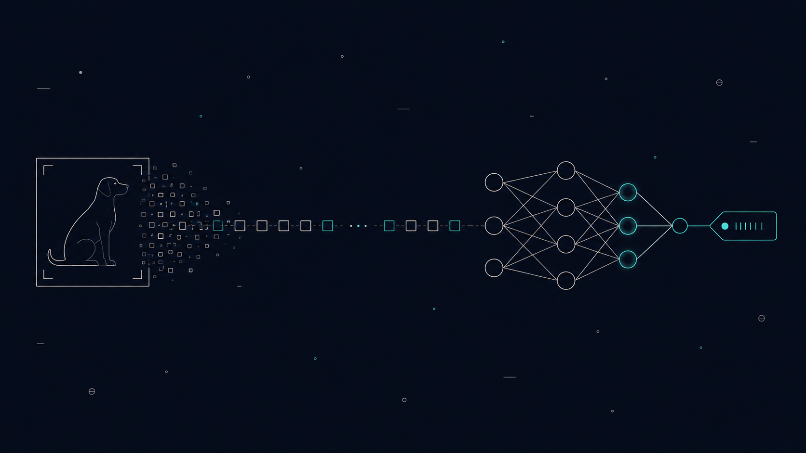
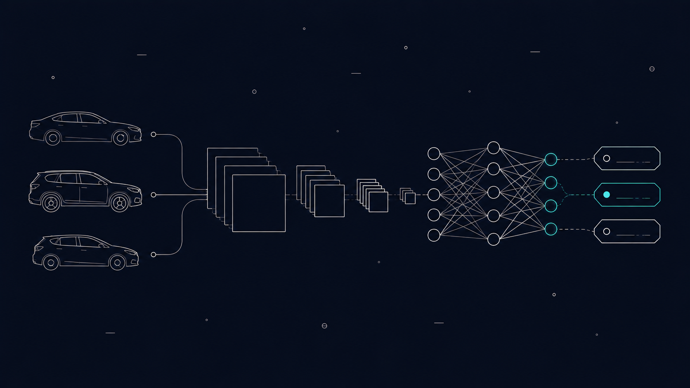
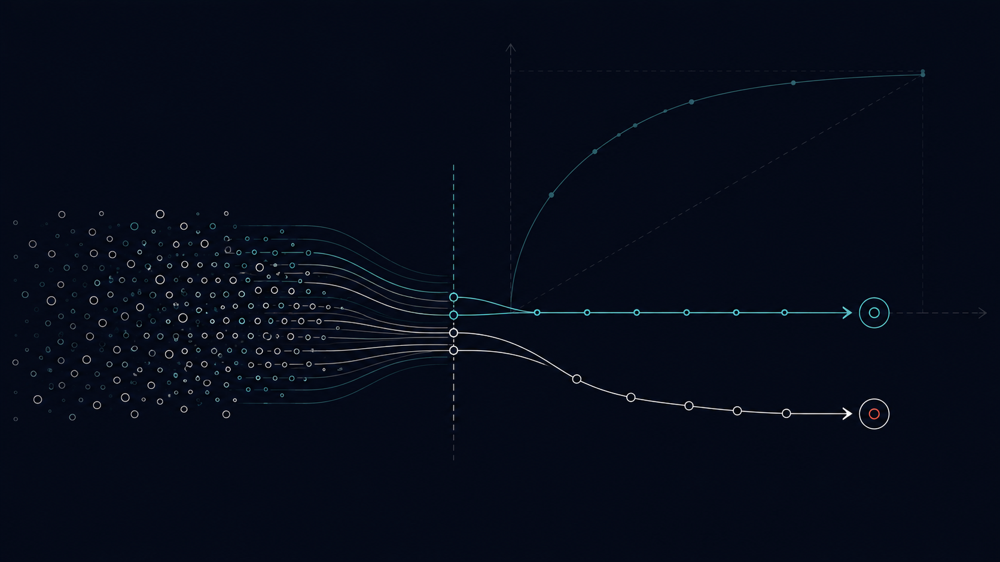

Featured work
Projects
9 end-to-end projects across Finance and IT — clean code, tests, and documentation.

💻 IT · GICSLLM Job Finder Agent
LLM agent with RAG and tool-calling — upload a resume, get matched jobs and tailored cover letters.
PythonLangChainChromaDBChainlitpytest
View on GitHub →
💻 IT · GICSBanking RAG Chatbot
Fully local RAG over confidential banking PDFs — no API keys, no data leaves the machine. Runs on CPU.
PythonLangChainChromaDBflan-t5PyMuPDFuv
View on GitHub →
💻 IT · GICSOpenAI Agent Toolkit
Context injection and cost telemetry for OpenAI agents — structured observability over token usage and model behavior.
PythonOpenAI SDKpytestuv
View on GitHub →
💻 IT · GICSAuto Image CNN
CNN classifier deployed as a FastAPI microservice — automated preprocessing, inference pipeline, and Docker packaging.
PythonPyTorchFastAPIDockerpytest
View on GitHub →
💻 IT · GICSVehicle Inventory CNN
Scratch vs transfer learning for vehicle image classification — benchmarks accuracy and convergence across both approaches.
PythonPyTorchtorchvisionpytestuv
View on GitHub →NYC Taxi Fare Prediction
Full-stack ML: Next.js frontend + LightGBM backend predicting taxi fares from coordinates in real time. Built as a team.
PythonLightGBMNext.jsFastAPIpytest
View on GitHub →Ecommerce Performance Insights
ELT pipeline over 100k Olist orders — DuckDB + SQL for revenue and delivery KPIs across categories and Brazilian states.
PythonDuckDBSQLpandaspytest
View on GitHub →
💰 Finance · GICSHome Credit Default Risk
Credit scoring across 246k loan applications. LightGBM + RandomizedSearchCV — 0.754 AUC-ROC with full preprocessing pipeline.
PythonLightGBMscikit-learnpandasuv
View on GitHub → 💰 Finance · GICS
💰 Finance · GICS
Bank Term Deposit Predictor
Binary classifier predicting term deposit subscriptions — feature engineering + LightGBM with a full ML pipeline.
PythonLightGBMscikit-learnpandasuv
View on GitHub →